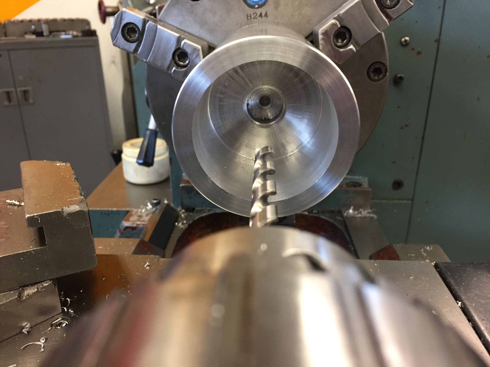
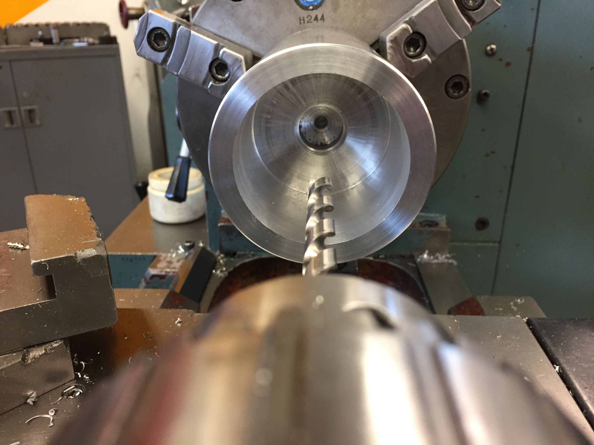

Malt
Jan 2017 - Mar 2017
Role
Mechanical Designer
Manufacturer
Tools
Metal Lathe
Mill
Electronics
Team
~solo project~
Fun Fact
I drank over 30 milkshakes in 5 weeks as "research"
How might we create a portable tool that could create and share food experiences with people, anywhere.
First Thoughts
At the beginning of ME203, Stanford's intense manufacturing class, we were tasked with simultaneously learning to use the lathe, mill, and metal sand casting tools and creating final project ideas, BOMs, and sketches. I naturally went back to my list of product ideas from high school. A musical rock that reacted to your movements. A chair that hung from a large metal ring. Nothing caught on with my team.
I then began revolving around my passion for food and cooking and found a sweet spot: milkshakes. There is an intangible quality of milkshakes that makes them universally adored and reminds us of the “good ol’ days.” Milkshakes were the one thing as a not sweet tooth that I loved as a kid and never made because my mom was kind enough to have them ready for my brother and I. So I set out on inventing this device.
Sketches
Below is a mix of my engineering drawings and initial ergonomic sketches of the machine. These also include diagrams for the strain relief that was later necessary for the wiring.
The Electronics
The first main step was to identify the electronics to use. The main components necessary were a motor, speed controls, mixing attachment, fan, and on/off switch. I researched many variable-speed DC motors and after consulting the teaching assistants, decided that since the class was not focused on electronics, I shouldn't focus time on making custom hardware. Instead, I found a Hamilton Beach Milkshake maker on Amazon that I promptly bought, brought to a gathering with friends to use once before its death, and then took it apart for its parts. These dimensions were the main constraints that went into the design of MALT.
Foam Prototype
I started building with the least-cost and easiest to shape material: modulan foam. After some sanding, I ended up with a looks-like, works-like prototype.
Metal Prototype
After a quick design critique, I moved onto the first MVP for making MALT happen: creating a grasp-able shape that the motor could house in and be powered.


 

Final CAD Models
Final Product
Malt in the Wild